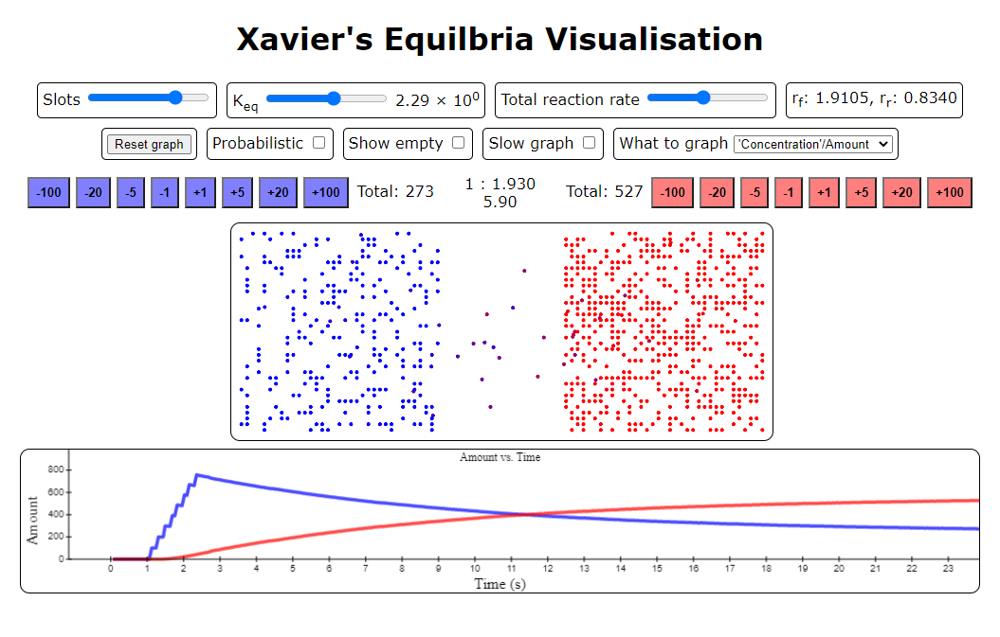
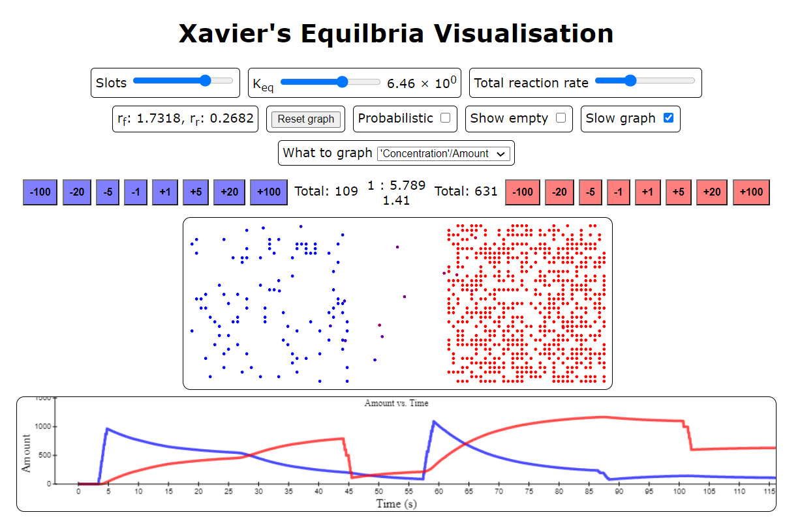
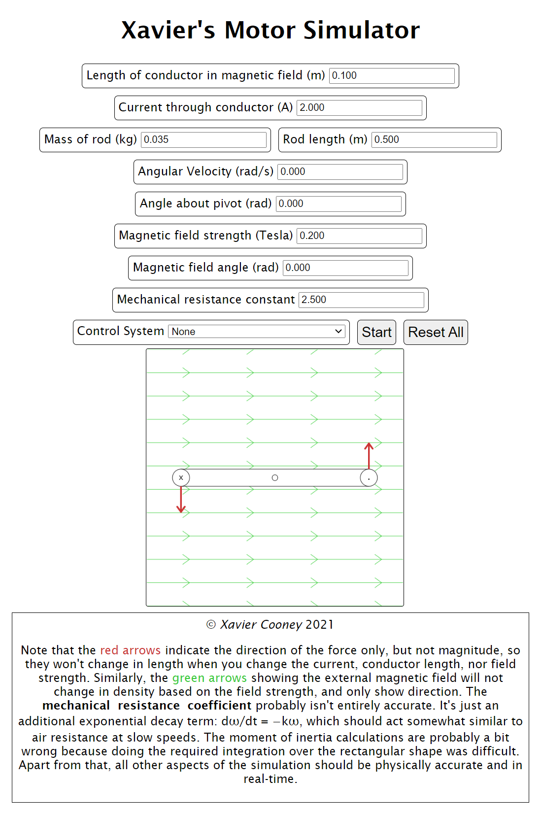

This is a list of some of things that I've made which are online. Hopefully some of them will be
interesting/useful. — Xavier
When our Software Design & Development class was learning about sorting algorithms, I
created a sorting visualiser to aid learning. Although there are a number of online tools
and YouTube videos which show sorting algorithms in a similar manner, this tool
is specifically designed for assisting in understanding the algorithms. The actually sorting
is performed by an interpreter for a pseudocode-like language, similar to that of the
NSW Education Standard Authority.
This allows students to step through the program written in a manner in which they are learning,
line by line, while they can see the state of the array-to-be-sorted, as well as all the variables. For
each integer variable, the user can select for that variable to be visualised as an index into the array,
which proved to be very useful.
As well as the three NESA specified sorting algorithms of insertion sort, bubble sort and selection sort, the
tool also has pseudocode-like implementations of a variety of other sorts, including quicksort, heapsort,
shellsort, and other more esoteric algorithms.



Chemical equilibria are an important concept in chemistry, particularly in the
year 12 chemistry NESA syllabus. Thus, when I my class began learning about equilibriums,
I created this online tool. I found that the development of this tool greatly assisted my understanding
of the topic. The visualiser has a number of options and buttons, but it's main purpose is to
simulate an equilibrium between 'red particles' and 'blue particles'. The blue particles will 'react' to red,
and the red to blue based on the equilbrium constant, Keq, selected by the user. Users can then
observe the reaction occuring, as the blue particles 'swap' to the red side and vice versa. Users
can then quantitatively analyse the state of the system, both with numeric displays and with the automatic
graph. The tool is highly interactive, allowing particles to be added or removed, the reaction rate
and equilibrium constant to be changed, and the graph and other parameters to be altered, all while the simulation
is running.
The simulation can run probabilistically, using the
Poisson distribution, or just based on
the expected amount of reaction, with rounding corrected for. The former is a truer represtentation of how
the specific set of particles would look like in equilbrium, while the latter allows for far larger systems
(which are much more relevant to the systems studied in chemistry) to be simulated and examined.
When my year 12 physics class were learning about how the motor effect can be used to create useful rotation,
I decided to see if I could use the equations we had learnt and create an actually physically accurate simulation.
Doing so purely algebricallly is non-trivial, but by using numeric integration, this tool allows users
to simulate the motor effect to a moderately to high degree of physical accuracy.
The tool allows for extensive phyiscal parameter configuration, from the length of the conductor to the
strength of the external magnetic field. Users can also select a 'control system', to simulate the commutator
on brushed DC motors, as well as other situations. For more information on the details of the simulation,
check out the information box at the bottom of the simulator page.
